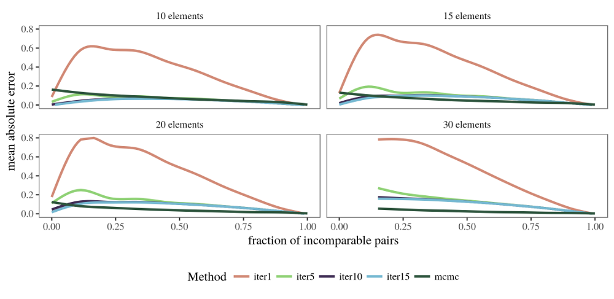
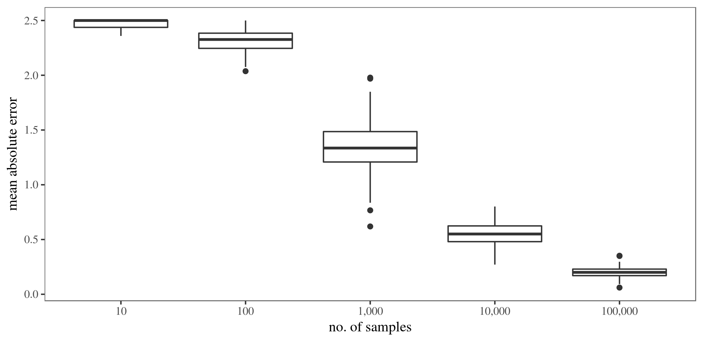
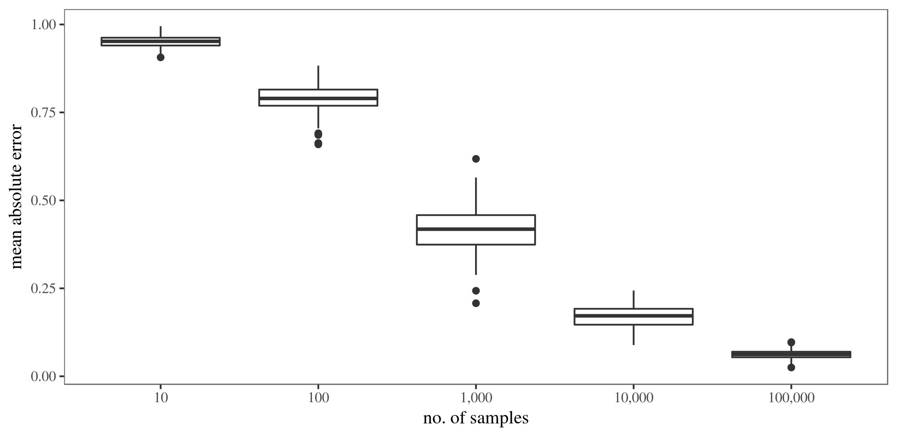

Benchmark Results
Some of the methods provided in netrankr are computationally very expensive. Computing all rankings of a partial ranking, for instance, is a NP-hard problem such that using the function exact_rank_prob() quickly becomes infeasible. This article provides some guidelines for when the use of this function is possible. Additionally, the quality of the approximation functions approx_* and sampling rankings with mcmc_rank_prob() for expected ranks and relative rank probabilities are assessed.
Runtimes exact probabilities
The below figure shows the runtime of exact_rank_prob() for a sample of 13,000 partial rankings with 10 to 30 nodes and varying degree of completeness.

Not surprisingly, the runtime increases quickly with the number of nodes and the number of incomparable pairs in the partial ranking. As a very crude rule of thumb: As long as a partial ranking has less than 30 elements, it is always save to run exact_rank_prob(). Beyond 30 elements, it is advisable to only use the function if a high fraction of pairs of elements is already comparable. The more elements, the higher this fraction should be.
Approximating expected ranks
netrankr implements five methods to approximate expected ranks which are given by the functions approx_rank_expected() and mcmc_rank_prob(). The four methods implemented in the former are only based on structural features of the partial ranking, while the latter is based on sampling rankings (almost) uniformly at random from the set of all rankings. Consult the help files for a more detailed description and references. The below figure shows the (averaged) mean absolute error compared to the exact expected ranks of the five methods on the set of 13000 partial rankings from above. The number of drawn samples for the mcmc function is set to \(n^4\), where \(n\) is the number of elements in the partial ranking.

The basic local partial order model performs considerably worse than the other methods on almost all partial rankings. Its generalized version outperforms the methods based on the relative rank probabilities (loof1 and loof2) if the number of incomparable pairs is high. The mcmc method generally yields the best approximations, especially with increasing number of elements. However, its performance seems to get worse when almost none of the elements are comparable. This issue is discussed in the section on choosing the number of samples further down.
Approximating relative ranks
Relative ranks can either be approximated with the iterative function approx_rank_relative() or again via sampling rankings (almost) uniformly at random with mcmc_rank_prob(). The below figure shows the (averaged) mean absolute error compared to the exact relative rank probabilities on the set of 13000 partial rankings from above. The number of drawn samples for the mcmc function is set to \(n^4\), where \(n\) is the number of elements in the partial ranking. The number of iterative steps in approx_rank_relative() is set to 1 (no iteration), 5, 10 and 15 respectively. 
Clearly, the non-iterative approximation performs worse on all partial rankings. The more iterations the better the approximation quality seems to be, yet the gain in quality going from 10 to 15 iterations seems negligible. The function based on random samples again performs better except in the region of low comparability.
MCMC sampling of rankings
The results above have shown that approximating expected ranks and relative rank probabilities on the basis of a random sample generally give the best results, except in the region of low comparability. This problem can be mitigated by increasing the number of samples. The below boxplot shows the mean absolute error for the expected ranks of an empty partial ranking with 10 elements, when the number of samples is increased. For each sample size, 100 repetition were done. 
The same procedure is carried out for the relative ranks below.

That is, increasing the number of samples (quite naturally) leads to better approximations, but of course also comes with an increase in running time, especially for larger partial rankings.
Runtimes of approximation
The function mcmc_rank_prob() generally gives the best approximations. The larger the number of samples, the better. Since the number of samples should be at least cubic in the number of elements, it is limited to partial rankings with a couple of hundred elements.
Although the function approx_rank_expected() and approx_rank_relative() performed the worst in the above tests, they are computationally the least expensive with a time complexity of \(\mathcal{O}(n^2)\). Thus, they are able to at least give a rough approximation also for partial rankings beyond a 1000 elements.
Session info
## R version 3.4.1 (2017-06-30)
## Platform: x86_64-pc-linux-gnu (64-bit)
## Running under: Ubuntu 16.04.3 LTS
##
## Matrix products: default
## BLAS: /usr/lib/libblas/libblas.so.3.6.0
## LAPACK: /usr/lib/lapack/liblapack.so.3.6.0
##
## locale:
## [1] LC_CTYPE=en_US.UTF-8 LC_NUMERIC=C
## [3] LC_TIME=de_DE.UTF-8 LC_COLLATE=en_US.UTF-8
## [5] LC_MONETARY=de_DE.UTF-8 LC_MESSAGES=en_US.UTF-8
## [7] LC_PAPER=de_DE.UTF-8 LC_NAME=C
## [9] LC_ADDRESS=C LC_TELEPHONE=C
## [11] LC_MEASUREMENT=de_DE.UTF-8 LC_IDENTIFICATION=C
##
## attached base packages:
## [1] stats graphics grDevices utils datasets methods base
##
## loaded via a namespace (and not attached):
## [1] compiler_3.4.1 backports_1.1.0 magrittr_1.5 rprojroot_1.2
## [5] tools_3.4.1 htmltools_0.3.6 yaml_2.1.14 Rcpp_0.12.11
## [9] stringi_1.1.5 rmarkdown_1.6 knitr_1.16 stringr_1.2.0
## [13] digest_0.6.12 evaluate_0.10.1